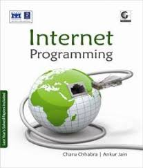

| An Internet application is a client-server application that uses standard Internet protocols for connecting the client to the server. You can use exactly the same techniques to create a true Internet application, which is available
publicly through the World-Wide Web, or to create an intranet application.Internet applications are thin-client, thick-server. This means that the client end, the part the end-user sees and interacts with, is only responsible for the user
interface. The client runs on a Web browser - the standard tool for accessing the Internet. All the processing is done at the server end, where your corporate data is.
Because your applications use standard Internet protocols for client-server communications, you can make your applications cross-platform. You write the server-side programs in Micro Focus COBOL, so you can run them on UNIX servers or
Windows NT (you need to purchase Micro Focus Net Express to run applications on Windows NT).
Alternatively you can exploit the support Server Express provides for using Java and COBOL components together in a distributed application, with the Java component providing the server-side functionality, and communicating with the COBOL
component running elsewhere in the network. For further information about using COBOL and Java together, see your Distributed Computing book. |
 |